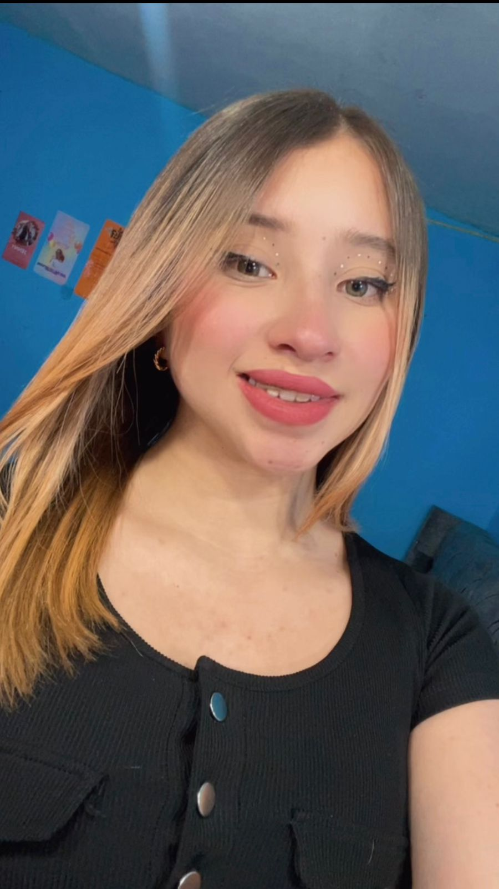
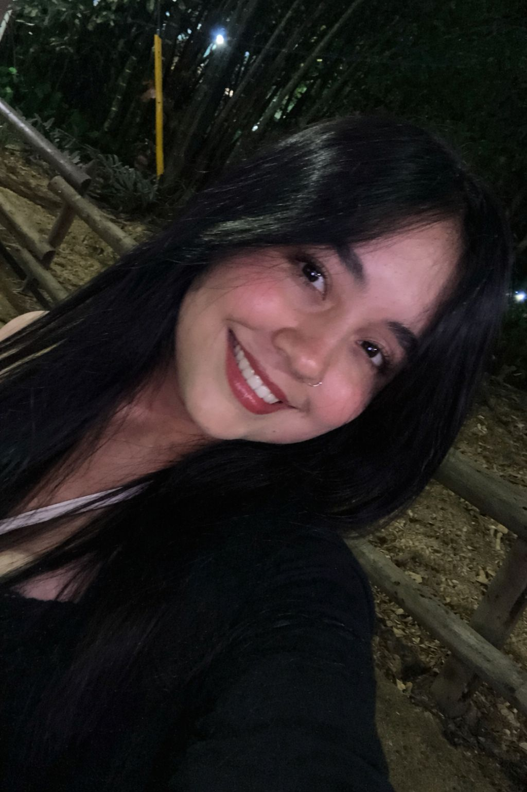
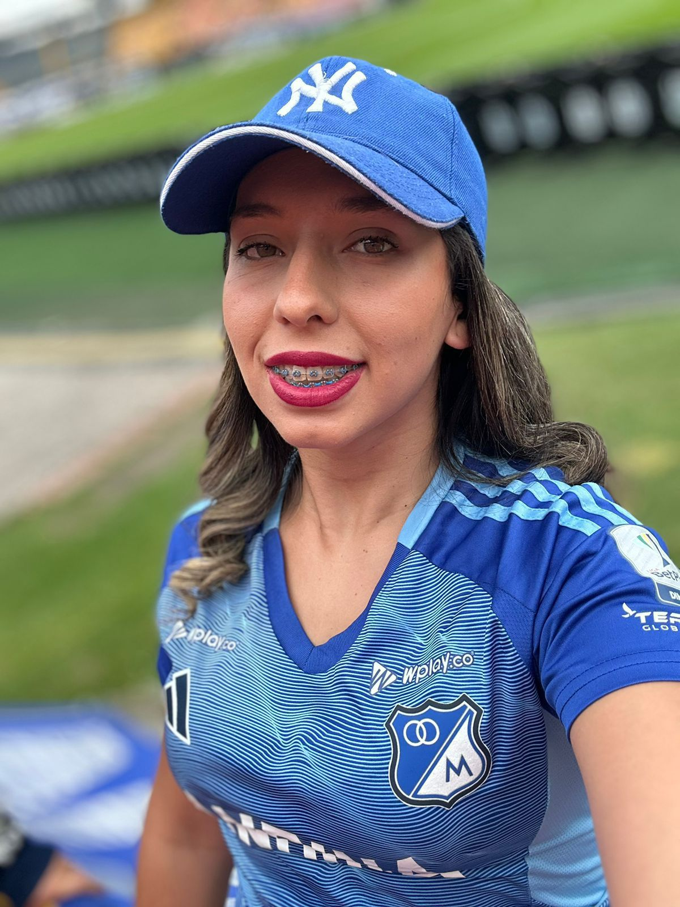

Transmitir y resaltar la historia, la pasión y la identidad del Club Millonarios a través de contenido digital, mostrando momentos, emociones y experiencias que conectan a la hinchada con el equipo dentro y fuera del campo.
Ser una plataforma digital reconocida por representar la esencia de Millonarios, consolidándose como un espacio donde los aficionados encuentren información, emoción y sentido de pertenencia hacia el equipo.
Mantener viva la pasión por Millonarios, creando un espacio donde cada imagen y cada historia acerque a los aficionados al corazón del equipo.

Planificación de episodios, organización de tiempos, coordinación de tareas y seguimiento del proyecto.

Grabación y edición de los episodios, montaje del documental, diseño visual de intro, créditos y estilo audiovisual.

Manejo de Instagram, redacción de textos para web y redes, organización del contenido digital y estrategia de audiencia.
En Azul en la Piel: La Voz del Hincha queremos escucharte 💙
Síguenos y haz parte de esta pasión: